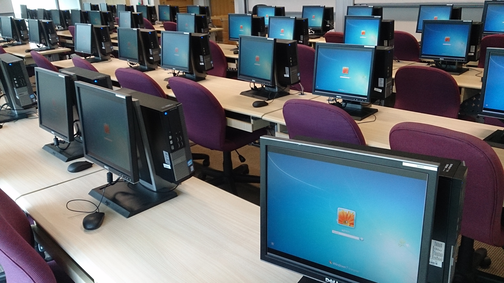
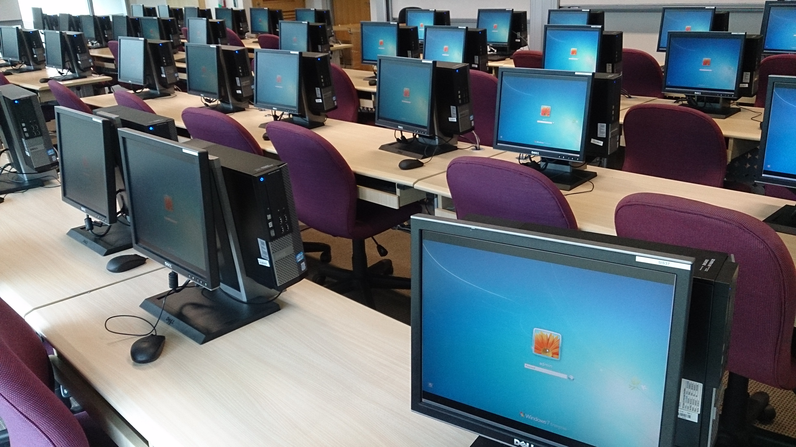
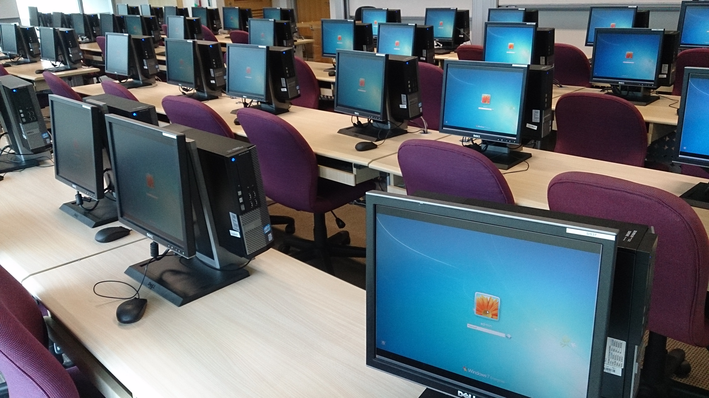

About Department
Vision
To be a leading educational center grooming computer engineers to serve the society.
Mission
M1.To develop professionals by providing conducive educational environment.
M2.To develop ability amongst students for innovation, entrepreneurship and higher studies through well designed curriculum.
Program Educational Objectives (PEOs)
PEO1-Graduate shall have abilities to pursue professional career. s PEO2-Graduate shall have an ability to work in core and diversified areas demonstrating teamwork and leadership. PEO3-Graduate shall have an ability to pursue higher studies and developenterprise yielding eco-friendly solutions.
About Department
The Computer Engineering Department was established in 2004 with an intake of 60 students. The Computer Engineering department has 24 well qualified staff with various specializations to help and guide the students. The deaprtment has “Computer Engineering Students Association” (CESA) in which additional curricular activities for overall development of student is observed. From 2012, the department has an additional intake of 60 students, so total intake is 120 students The department has its own departmental library with sufficient number of titles.
Laboratories
Computer department having eight well equipped labs as Software Lab – I, Project Lab, Software Lab – II, Linux Lab, Hardware Lab & Internet Lab.
